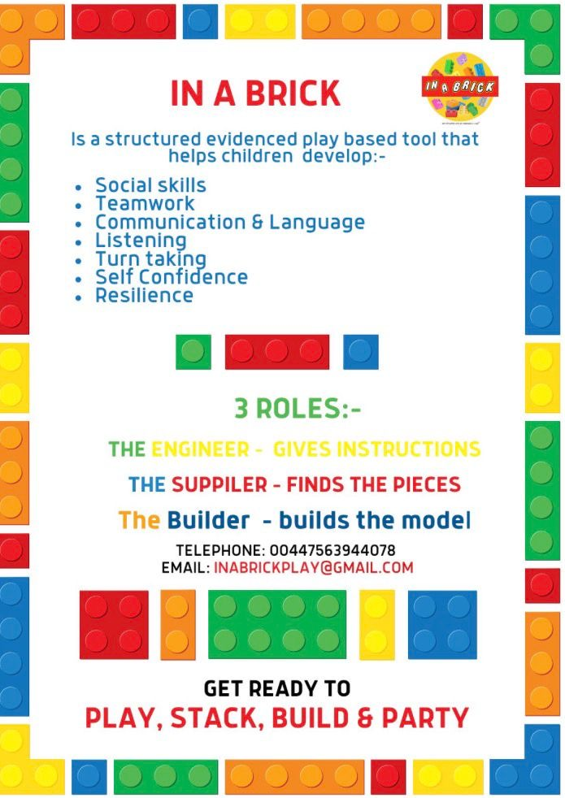

About In A Brick
In A Brick Play uses structured, evidence-informed brick play to help children develop communication, language, teamwork, self-confidence and resilience.
Sessions are playful and purposeful. Children work together in clear roles, practise club rules, solve problems and create builds they can feel proud of.
Training note: Jane, founder of In A Brick Play, completed Advanced LEGO®-Based Therapy training delivered by Daniel LeGoff, PhD, LP.
